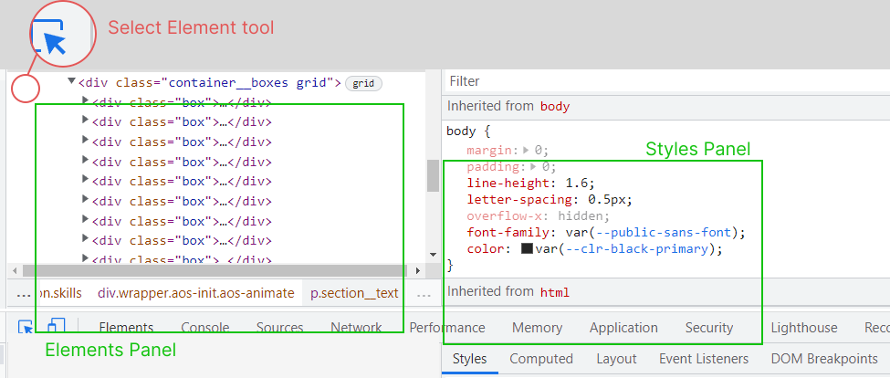

Why and how to start using Devtools if you are learning CSS
Sep 23, 2022
If I could give a piece of advice to my former self back when I started learning web development, it would be to start using Devtools from day one.
In my personal experience, while the first CSS courses I followed online taught me a lot about CSS theory and encouraged me to learn through practice, they didn’t put enough emphasis on the importance of developer tools. In JavaScript, on the other hand, every lesson starts by showing you the console, as it’s crucial to understanding how the language works.
I believe that a good understanding of what happens behind the scenes on a webpage is not only useful for debugging, but is also a fundamental step in your journey to really understand CSS.
I should start by saying that I really like CSS, but that wasn’t exactly the feeling I had when I started and I’ve noticed that the same is true for a lot of developers.
This seems to be especially true for people who know other programming languages, who often get frustrated by the fact that CSS works very differently to other languages.
My opinion completely changed once I had a better understanding of CSS. I realized that it is actually fun and Devtools were a game changer for me.
Accessing the DevTools Window
Every major browser has Devtools. I personally use the ones in both Chrome and Firefox, because they have different, interesting features.
To open up your Devtools, you just need to press F12 or
Command+Option+C (Mac), Control+Shift+C (Windows, Linux).
Alternatively, you can right click and choose inspect element.
Features:
Let’s talk first about my favourite feature:
The Select Element Tool
For beginners, the select element tool will quickly become your best friend. This can be accessed by clicking the icon as shown in the picture.

Now you can highlight elements on your webpage to understand how much space they take (padding, border and margin) and even change properties and values and see the results in real-time. You’ll finally find out what is causing that annoying white space!
Whenever you select an element on the webpage, it will also be highlighted in the elements panel and will show all the properties being applied in the styles tab.
The Box Model visual representation
Something I find myself doing very often is experimenting with the visual representation of the box model.
This tool is located in the computed tab on Chrome while you’ll find it in the Layout tab if you are on Firefox.
It allows you to change the values of padding and margin directly in the browser to see how they look and, once you are satisfied, you can edit them in the HTML and CSS source code.
Flexbox and grid editor tool
Chances are you are using both flexbox and grid in your design. If so, Google Chrome has provided a very cool tool to help edit and debug them.
You just need to click on the icon next to the display property and a panel will pop up. Then you’ll be able to play around with all the flex or grid properties.
I remember when I started using flexbox I always got confused with the align and justify properties. With this tool you just need to click on the icons below the property name, which also offer a visual representation of the default behavior, and see what happens in your website without messing with your source code.
Another important feature is:
The Responsive Mode
Making a responsive website is never easy and can be especially intimidating for a beginner.
This special mode makes our life easier by showing our website on a list of different devices. It also allows us to manually resize the window by dragging the corner on the screen to any size we want.
This way it becomes easier to decide where to include breakpoints and all the things we need to modify on our webpage to make it look good at all sizes.
Conclusions
Obviously there are many more advanced features and a lot more you can do with the developer tools. These are just the ones that have massively helped me have a better understanding of CSS and that I recommend to everyone who is learning it. I also hope they will make you appreciate CSS a bit more.